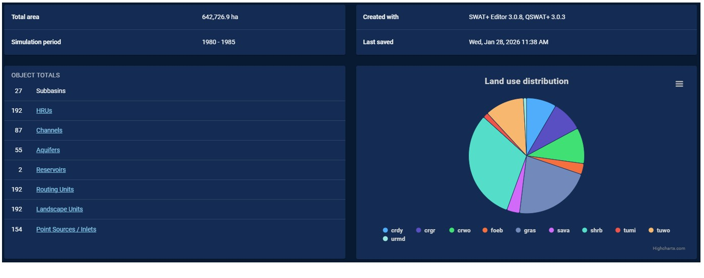
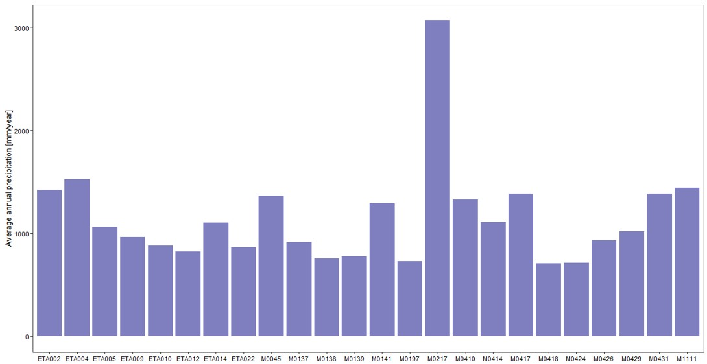
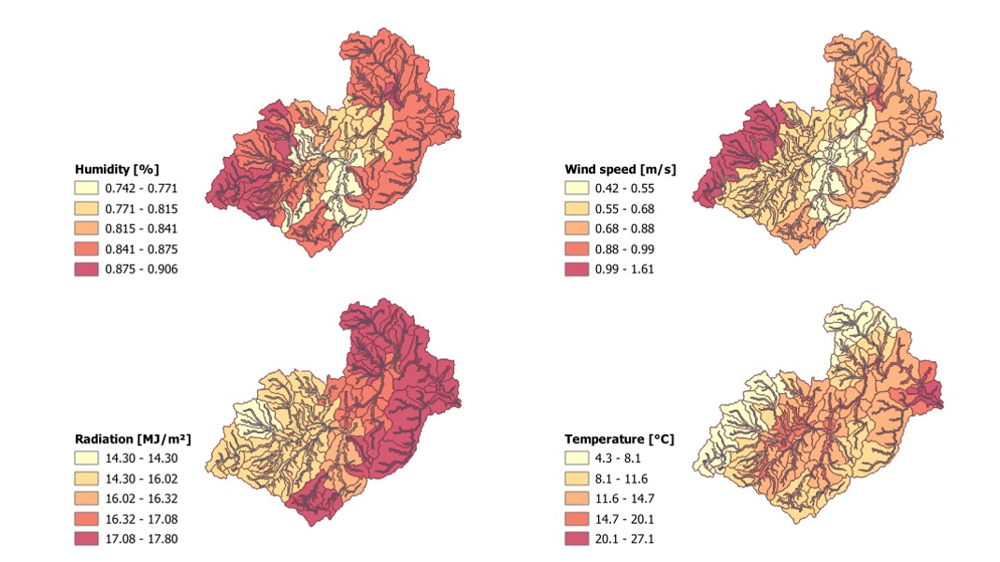
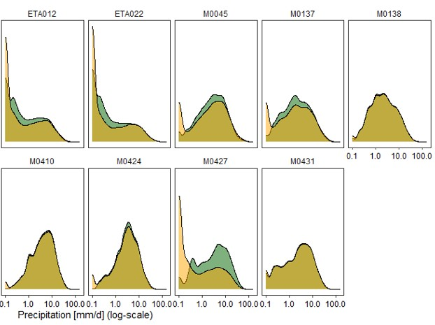
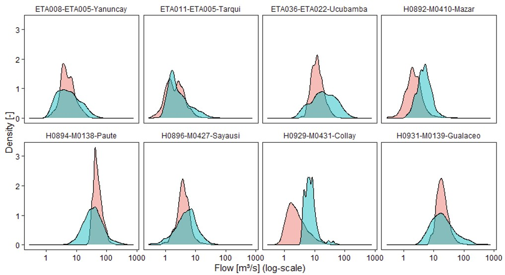
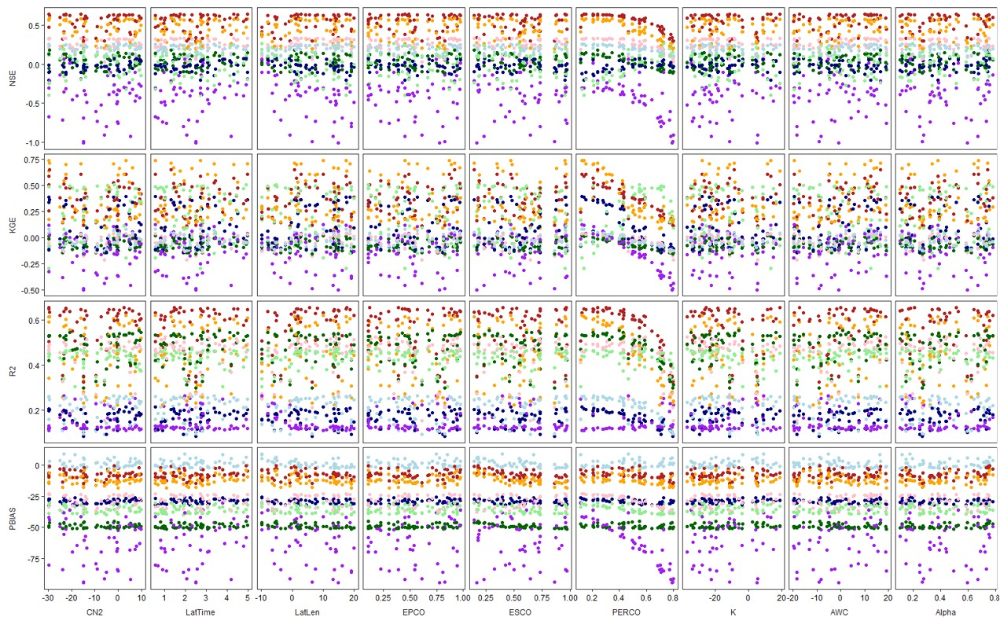
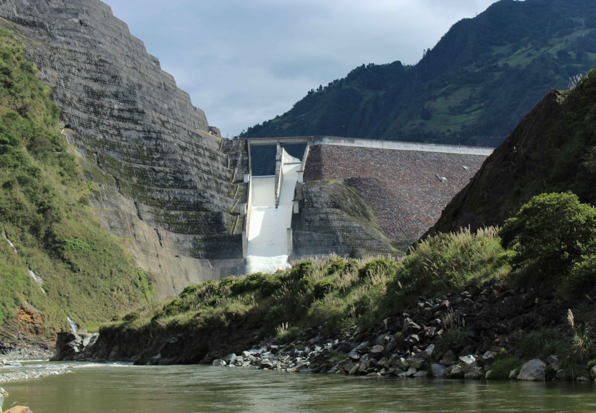
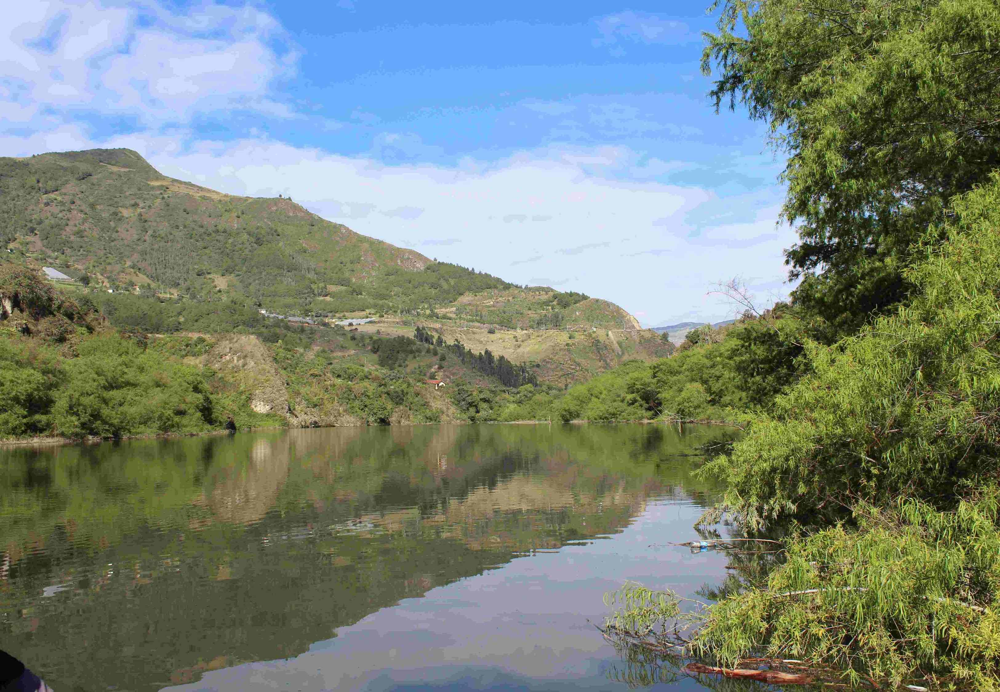
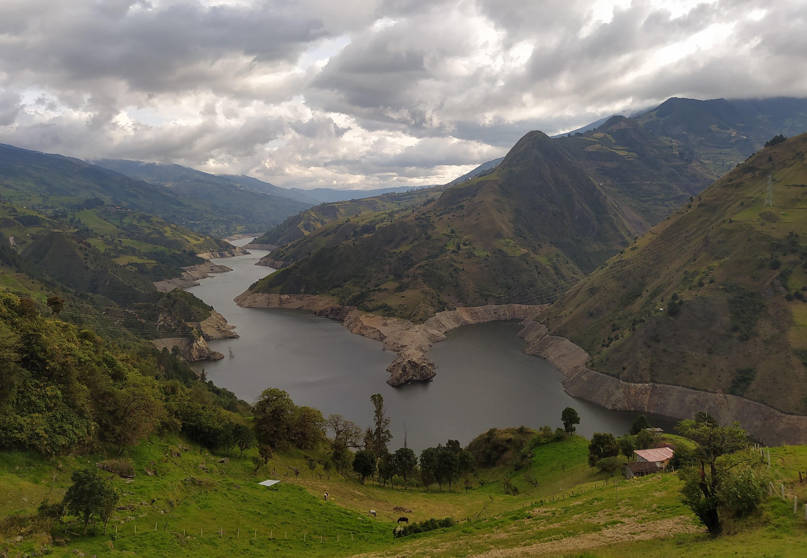

Model calibration
After completing the delineation of the hydrological response units (HRUs) and preparing the weather/climate data, we have come to the point of developing and calibrating a hydrological model via SWAT+. To do so, we will be using the SWAT+Editor interface to (1) load the delineated HRUs (and overall watershed) and (2) upload both the station-specific time series, as well as the derived climate statistics. This represents the baseline input of the hydrological model and only needs to be changed to derive the sensitivity to a change in the HRU delineation procedure or when the interests lie in the impact of different climate conditions on the hydrological processes within the basin.
The SWAT+Editor is positioned as the main interface between the user and the modelling, allowing changes in parameter values at basin/subbasin/HRU level. For instance, it allows to change the approach to calculate the amount of evaporation, as well as change the temperature lapse rate (i.e., the decrease in air temperature for every 1000 m increase in elevation). The interface also allows to define if plant growth takes place and if this is exposed to any kind of water or nutrient stress. Moreover, these plant communities can be defined specifically for the project at hand, allowing changes in the minimum air temperature to support growth, the depth of root growth, and the type of management applied. A last example of potential changes includes the characteristics of the soil (like permeability, saturation, depth, ...). While the options are almost endless, we will only use a few of them. But first, we have to start our SWAT+Editor, which typically results in a summary of the delineated watershed, as shown below.

Performance assessment
An important element of model calibration, is the comparison of the simulated and observed time series, along with a quantification of the accuracy. To do so, we consider the following two categories of calibration:
- Soft calibration - Field observations are used to derive broad statistics on rainfall, evapotranspiration, … and subsequently help in assessing the hydrologic and climatic correctness of the model. This includes both meteorological and hydrologic conditions, often considered at an annual and basin-wide scale.
- Hard calibration - Field observations are used to derive daily or monthly statistics on river flow and subsequently help in assessing the hydrologic correctness of the model. For this, we use specific statistics (like Nash-Sutcliffe efficiency, coefficient of determination, percent bias) to compare both time series, while also providing insight into the sensitivity of the model towards changes in specific model parameters (as part of a sensitivity assessment - see further).
Parameter setting
The SWAT+Editor starts with a whole collection of default parameter values, which makes it possible to develop a hydrological model without any changes in the used parameter space. However, it is highly likely that a combination of all default parameter values will not result in the most accurate model for every case study. For our project in the Paute river basin, additional changes are made in the section Basin:
- Basin > Codes > Priestley-Taylor as PET method
- Basin > Codes > Stress codes equal to 1 ('Turn of all plant stress')
- Basin > Codes > Allow adjustment for elevation
- Basin > Parameters > Adapt temperature lapse rate to 6.5 °C/km
Most of the land use within the Paute basin is natural of some sorts, which means that plants grow and support the transpiration of water. Meanwhile, these plants also limit the evaporation from the soil. To allow for these plants to grow within the model environment, the following changes can be made as well (under Land use management > Plant communities and changing for every plant community):
- Land cover status to 'Yes' (i.e. is it growing?)
- LAI to maximum/minimum LAI of community (click on community name)
- Initial biomass to 1000 kg/ha
- Fraction of years to maturity to 1
Soft calibration
Observations
We start our soft calibration with analyzing the observed weather conditions in the basin. For this, we are interested in the bigger picture, hence we will look at the annual level to summarize our observations. More specifically, we will have a look at the following statistics:
- Average annual precipitation within the basin
- Average annual (potential) evaporation within the basin
- Average annual temperatures (including min-max) within the basin
- Average annual humidity within the basin
- Average annual wind speed within the basin
- Average annual radiation within the basin

| Variable | Value |
|---|---|
| Precipitation | 1141 ± 541 mm/year |
| Relative humidity | 83 ± 6 % |
| Wind speed | 0.6 ± 0.1 m/s |
| Maximum air temperature | 20 ± 4 °C |
| Minimum air temperature | 10 ± 2 °C |
| Observed solar radiation | 5475 MJ/m²/year (1 station via FAO formula) |
| Satellite solar radiation | 5885 ± 329 MJ/m² |
| Potential evapotranspiration | 1374 ± 808 mm/year |
| Satellite actual evapotranspiration | 897 ± 49 mm/year |
Simulated meteorology
Soft calibration of the model based on the simulated meteorology can be performed in two main steps: (1) an overall spatial analysis and (2) a station-specific analysis of annual averages. Within our Paute project, the assessment of the spatial distribution shows that most meteorological conditions align with the expectations. The figure below shows the spatial distribution of the meteorological conditions, though it should be noted that this model excluded the virtual meteorological stations. A similar assessment can be made for precipitation and the resulting runoff.

While the spatial distribution aligns more or less with our expectations, this might not be the case with the underlying time series. Simulations that were made via the SWAT+ software can be extracted from the underlying generated database, but this requires some attention. Every channel, HRU, and landscape unit (LSU) is given a unique number that should be used to consult the associated time series. For meteorological stations, we are interested in the HRU or LSU in which the station is located. We can identify this unique code via QGIS, followed by a search of the HRU report that can be consulted through the main SWAT+ dialog box. These codes remain the same, as long as the delineation of the watershed is not changed. These linkages allow to consult the appropriate time series and derive the necessary annual statistics for comparison with the observed conditions.

Simulated flow

Sensitivity analysis
As mentioned earlier, SWAT+ comes with a set of default parameter values that allow to directly generate a hydrological model. Yet, this model can likely be improved by changing parameter values to better represent the study area. Given this, a variety of model parameters can be identified that directly have an influence on the outcomes: CN2 (SCS curve number for moisture condition II), SOL_AWC (available soil water content), SOL_K (saturated hydraulic conductivity), ESCO (Evaporation compensation factor), EPCO (Plant uptake compensation factor), PERCO (Percolation coefficient), ALPHA (groundwater flow response), LAT_TTIME (Lateral flow time), LAT_LEN (Average slope length), … Each of these parameters is characterized by a value range that can be explored as part of a sensitivity analysis. This analysis allows to identify those parameters that have an above-average influence on the performance of the model, which supports the further finetuning of the model towards the case at hand. The table below gives an indication of the parameters, their range, the suggested change type (Absolute: Change with the specified value - Percentage: Change with the specified percentage - Replace: Replace value with the specified value), and the value range to consider during the multi-loop sensitivity analysis.
| Parameter | Range | Change type | Range value change |
|---|---|---|---|
| HRU_CN2 | 1 - 100 | Absolute | [-15, 10] |
| SOL_AWC | 0.01 - 1 | Percentage | [-20, 20] |
| SOL_K | Percentage | [-20, 20] | |
| HRU_EPCO | 0.01 - 1 | Replace | [0.01, 1] |
| HRU_ESCO | 0.01 - 1 | Replace | [0.01, 1] |
| HRU_PERCO | 0 - 1 | Replace | [0.1, 0.8] |
| AQU_ALPHA | 0.1 - 1 | Replace | [0.1, 0.8] |
| HRU_LAT_TTIME | 0.5 - 100 | Replace | [0.5, 5] |
| HRU_LAT_LEN | 0 - INF | Absolute | [-10, 20] |
As a result from this sensitivity analysis, a visual overview of parameter influence can be generated to support both parameter and model finetuning. The graph below illustrates the outcome of our sensitivity analysis for the Paute basin, focusing on eight hydrological stations (mostly in the upstream part of the basin). It shows an overall limited sensitivity to the chosen parameters, though some stations seem to benefit from a decrease in the parameter PERCO (describing the percolation of the soil). This is useful for developing a final model configuration that will also be used for future scenarios (under the assumption that the main soil and vegetation characteristics remain unchanged).

While model calibration entails a wide variety of techniques and approaches, we have highlighted the most important ones for our specific project on the Paute river basin. At this point, we have a working model that can be applied to derive future flow conditions under a changing climate. More information on this can be found on the page related to Future flows.


